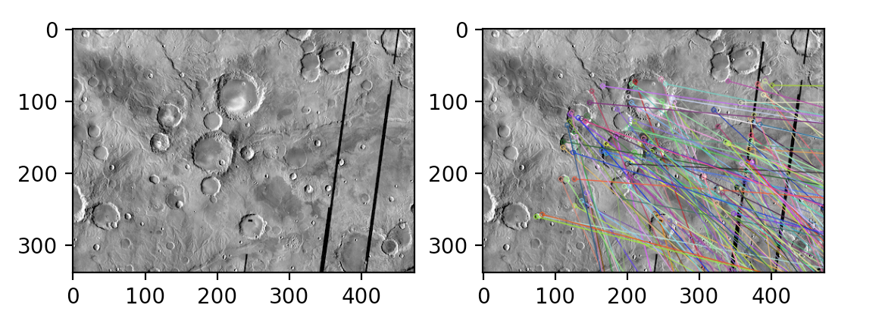
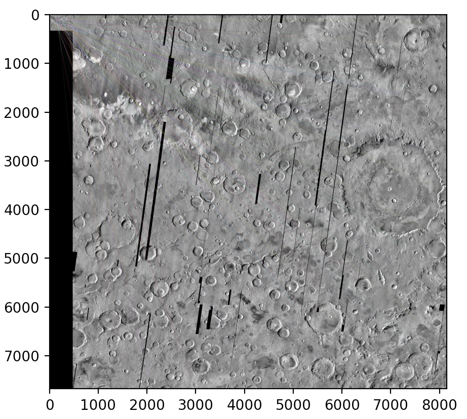
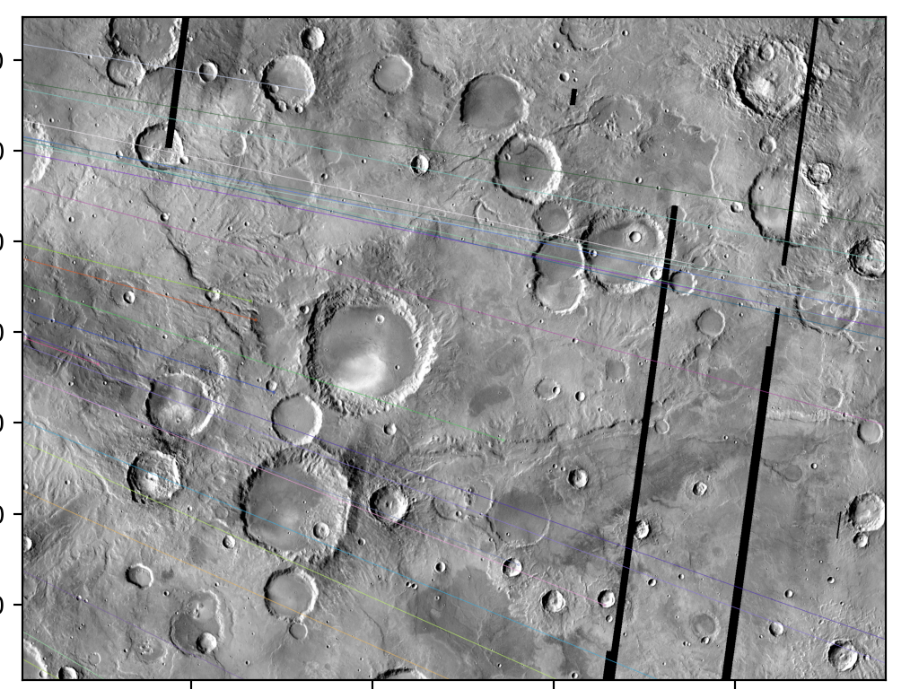
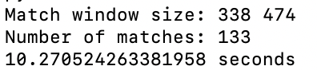
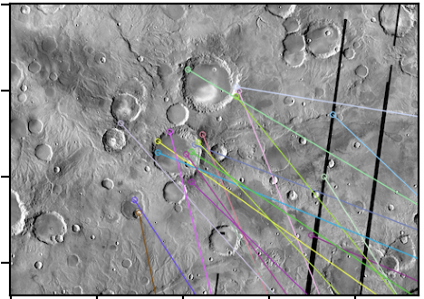
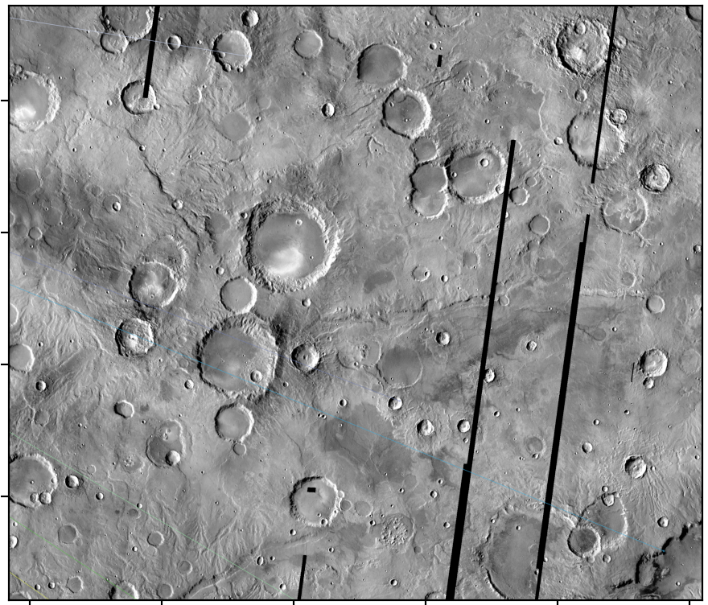

CS 4476 Group Project
Members: Winter Galyon, Patrick Liu, Connor Reitz, Joey CrawfordComputer Vision Class Project, Fall 2020
Georgia Tech CS 4476, Intructor: Devi Parikh
Abstract
Our project aims to identify where an input satellite image was taken relative to a known comprehensive satellite image. The case we hope to apply this to is an elevation map of mars provided by Google Mars. The input to our algorithm is an image of the surface of Mars and the output would be the location of that image relative to the elevation map we use as a reference as well as the orientation and size of the image relative to the Google Mars map, which could be used to identify the elevation the image would have been taken at if from a satellite.Introduction
TODOTeaser Figure

Approach
- Our approach will result in a confidence matrix of the possible locations for the center of the viewing window (the input image). This will be constructed using several approaches which will be weighted and combined into a single nxm matrix where n and m are the dimensions of the google mars source image. (we can orient the input image when we get to that by matching the average gradient direction of the input window and the Google Mars picture)
- One approach we will conduct is to find the center of a large number of the craters in the source image (elevation map from Google Mars) and store these as a nxm matrix wherein the center of each crater will be recorded as defined by a run of the hough circle detector (using gradients to decrease noise) on a set number of known radii. This will result in a number (R) of nxm matrices, one for each radius we choose to edge detect with.This algorithm will then be run on the input image and another R matrices will be made with a number of centers. This will then be randomly overlaid with the source image and a Gradient Descent algorithm with Simulated Annealing will be run to gradually converge on a local minimum (ideally the true minimum) for the distance to predicted crater centers. This will be run many times to prevent the location of local minima rather than the true minimum. The equation we want to optimise is the sum of distances between each center in the input to the closest centers in the source image. We will begin by writing the algorithm with a known window size for the input and known orientation (the same as the Google Mars orientation).
- We will also be implementing a version of Speeded-Up Robust Features (SURF) to map an image to a location on Mars. To break down my process, the algorithm will have three parts: interest point identification, local neighborhood description, and matching. Utilizing the integral image, the algorithm will filter and use a blob detector to detect interest points. Different scales are obtained by applying box filters of different sizes. Local orientation vectors are then calculated using Haar wavelet responses weighed by a Gaussian function to determine the dominant orientation. The descriptors from the image and Mars will be compared to determine matching pairs.
- Another technique we can use to perform feature detection and matching is by using SIFT (scale invariant feature transform), which is robust to rotation and scale. Initially to actually extract the features, we use a space-scale blob detector to identify the local maxima in the image. We then create a vector based on these extracted features using SIFT and use a thresholding along with euclidean distance ratios to feature match.
- One last technique we will experiment with (measuring accuracy and speed) is by using the BRIEF (binary robust independent elementary features) feature detection and matching method. This method matches keypoints between the test images and the original image by using binary feature vectors. The image will first be smoothed by a Gaussian kernel. Then, the algorithm will find keypoints in the image and create descriptors to encode a numerical “fingerprint” so we can tell each feature apart from another. This image will then take image patches around the keypoint pixels, convert them into binary feature vectors, and represent the objects for matching.
Experiments and results
Our experiment is to compare a set of images of different sizes and orientations from random locations on the Google Mars ‘visible’ map with the full image. Knowing where the image is on the map, determine how accurately the program was able to locate where the image was at using the error calculation on the x and y location of the predicted location as well as the size and orientation. We will begin by knowing how large the window size is and that the orientation is north south (the same as the google mars source image). Then as we succeed we will make the algorithm more robust by using different orientations and gradually decreasing the window size of input images to prove greater efficacy. For our success criteria, the program is expected to be slightly less accurate with smaller areas of the map, as there are less features that we can extract to define the image. Initially we will start off by demonstrating a brute-force approach, which will be very computationally expensive and take very long to run as a result. We will then contrast this brute-force approach with the other algorithms/optimizations that we found through our research and compare the computation time as well as accuracy to our other approaches that we present. To actually assess the runtime and accuracy, we plan on using the time library for Python. For computing accuracy, we plan on using several metrics such as SSD and RMSE to compare our approaches.Patrick's Approach
To preprocess the data, the raw images are done in a cylindrical projection, making viewing the entire map difficult:We first reproject the map, correcting for distortions:

We then split up this reprojected image into tiles for ease of processing and crater detection. For example:
Now, I am using an object detector for each tile, specifically using a blob detector and will extract the SURF descriptors for each region, which I used an already existing implementation. I then use an estimator to determine whether or not the objects detected are craters, specifically using gradient boosted decision tree classifiers from sklearn. Currently I am still working on this, but here is a preliminary prediction:

Next steps for my approach include using Keras's implementation of a single-shot multibox detector(SSD).
BRIEF Approach
For the BRIEF approach, we used OpenCV to extract key points and descriptors from a plane image of Mars and a local region within the plane image. The key points were detected using STAR, and then we used OpenCV’s BriefDescriptorExtractor to get the descriptors from those key points. The find_and_match_brief method in BRIEF_approach.py uses brute force matching and takes in a number of matches to display in the results – showing all matches by default. For this mid-project update, the BRIEF method was applied to one image and one local region to test out the method itself. In the final update, the method will be applied to various images with different local regions to test for speed and accuracy. For now, we can see the results of our BRIEF matching method: (Images computed with all matches showing) a) Local region within a large photo and its detected key points 
b) Local regions key points matched to regions in the plane (hard to see due to size of image) 
c) Zoomed in plane to local area to better see local matches

d) Statistics for the BRIEF approach (not including displaying the images, just the calculations themselves for detection and matching)
Using a relatively small window size in comparison to the overall image, 10.27 seconds for computing all the key points and matching them seems to be relatively fast. However, the method so far seems to lack accuracy. Out of 133 matches, there are not many that match to the location of the window I selected in the plane image. I believe this can be explained by 2 factors: the window size and the composition of the Mars surface. BRIEF doesn’t seem to be detecting features close to the edge of the local region, which can be seen in figure A. Any window size smaller actually was unable to detect any features for the image, so it is failing around the edges. For future updates, we will experiment more with larger local regions to see if accuracy is increased in matching. Secondly, the surface of Mars in this image contains many similar features; it is composed mainly of circular craters spread out around the entire surface. This may be the reason that it is detecting many matches outside of the desired region and could be an early indicator that detecting circles with the Hough transform may end up being the most accurate method of detection. In the next update, we will explore with preprocessing images before using the BRIEF approach to see if accuracy is increased. We will also compare the outputs of BRIEF to ORB (Oriented FAST and Rotated BRIEF).

e) local area with 20 best matches showing

f) local area matches in plane
Reiterating what was said before, accuracy seems to be low for these early attempts at using the BRIEF approach. Using different window sizes and preprocessing, we hope to increase the accuracy of this method.
Conclusions and Future Work
BRIEF Approach
As aforementioned, much more experimentation will take place with the basic framework of the BRIEF approach up and working. Different images of the surface of Mars, different local region window sizes, and preprocessing will all be experimented at different levels to attain a most accurate matching of regions to overall surface images of Mars. We will also compute processing times for when changing these parameters to measure for speed as well.Resources
- Finding water bodies with neural nets
- Finding features in satellite images
- Location using chamfer distance
- Mars elevation map
- SURF: Speeded Up Robust Features
- SIFT
- Python time documentation
- Automatic detection of sub-km craters in high resolution planetary images
- Matching descriptors in OpenCV
- Implementing BRIEF in OpenCV